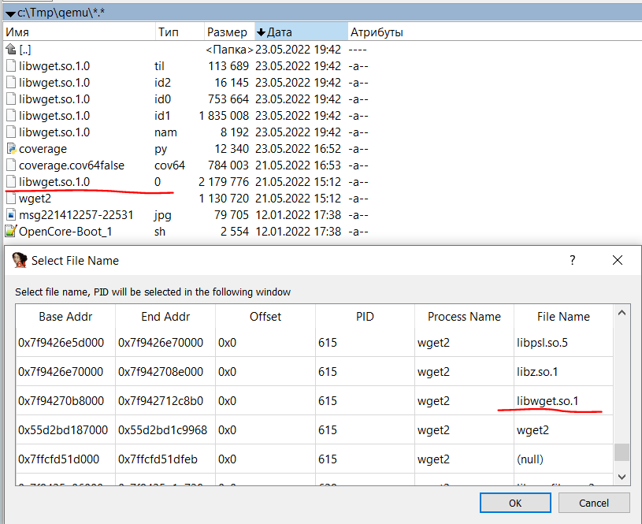
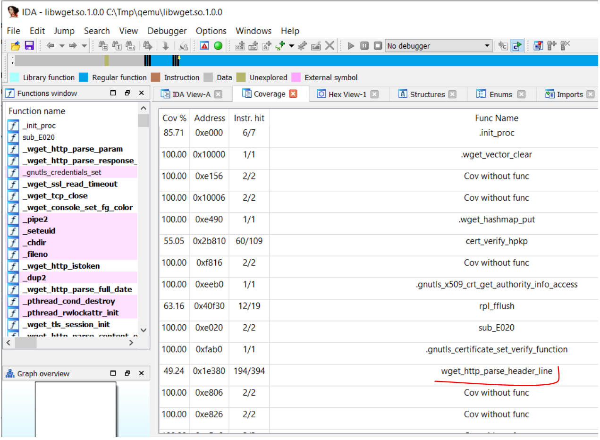
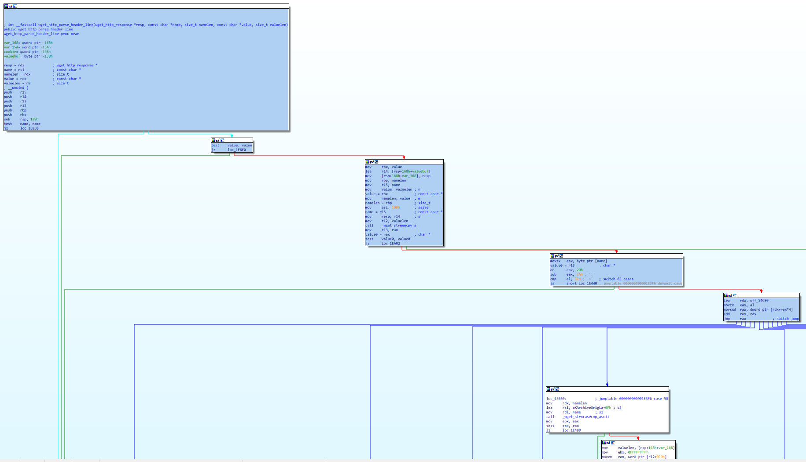

10. Дополнительные возможности Natch
10.1. Облегченный режим работы Natch
Natch предусматривает два режима работы: стандартный и облегченный.
В стандартном режиме происходит полный анализ с пометкой данных и построением всех логов и аналитик. Однако, иногда пользователь может не знать что именно следует помечать. В такой ситуации может быть полезно собрать общую картину происходящего в системе и принять решение какие ее части вызывают интерес. В этом режиме собирается информация о процессах, модулях, файлах, сетевых взаимодействиях. Облегченный режим отключает анализ помеченных данных, за счет чего выполнение сценария происходит быстрее.
Переключаются режимы с помощью конфигурационного файла taint.cfg:
[Mode]
light=false|true
Также облегчённый режим можно использовать для предварительной разметки работы jit-компиляторов (Java, .NET, JavaScript). При этом внутри сценария сохраняется вспомогательный файл, позволяющий в полноценном режиме анализировать jit-код не включая старт компилятора в анализируемый сценарий.
Описание секции в разделе Конфигурационный файл для помеченных данных taint.cfg.
10.2. Подробная трасса помеченных данных
Для более детального анализа может потребоваться больше информации, которую можно получить с помощью опции конфигурационного файла Modules/log.
В генерируемом логе на каждое обращение к помеченной памяти формируется расширенный набор данных.
Фрагмент лога для одного обращения:
Load:
Process name: wget2 cr3: 0x1b5a5c000
Tainted access at 00007f921af88896
Access address 0x7f921a504b08 size 8 taint 0xfcfcfcfc
icount: 21216379863
Module name: /lib/x86_64-linux-gnu/libpthread.so.0 base: 0x00007f921af77000
Call stack:
0: 00007f921af88896 in func 00007f921b3b1c40 wget2/build/lib/libwget.so.1::.recvfrom
1: 00007f921b3c5307 wget2/libwget/net.c:861 in func 00007f921b3b0860 wget2/build/lib/libwget.so.1::.wget_tcp_read
2: 00007f921b3bdbda wget2/libwget/http.c:990 in func 000055b58a29f350 files/wget2::.wget_http_get_response_cb
3: 000055b58a2ac0ec wget2/src/wget.c:4017 in func 000055b58a2ac0e0 files/wget2::http_receive_response wget2/src/wget.c:4016
4: 000055b58a2ac654 wget2/src/wget.c:2266 in func 000055b58a2ac2b0 files/wget2::downloader_thread wget2/src/wget.c:2250
5: 00007f921af7efa1 in func 00007f921af7eeb0 /lib/x86_64-linux-gnu/libpthread.so.0
6: 00007f921aeaf4cd
Не рекомендуется включать эту опцию по умолчанию, поскольку файл получается ощутимого размера (сотни байт на каждое обращение к помеченным данным).
10.3. Получение областей помеченной памяти для функций
Инструмент позволяет получить лог вызовов функций с диапазонами адресов записанных и прочитанных помеченных данных. Для получения лога необходимо использовать опцию конфигурационного файла Modules/params_log. Эта опция задает имя файла, куда будет записан лог с параметрами функций.
Выходной файл содержит диапазоны адресов и типы операций, выполненных с помеченными данными (r=чтение, w=запись). Также выводится стек вызовов на момент выхода из функции.
Фрагмент выходного файла:
0xffffffff82dfc6f0 vmlinux:eth_type_trans
0xffff88800e723840 8 bytes r
0xffff88800e72384c 2 bytes r
enter_icount: 58799550862
exit_icount: 58799551027
0: ffffffff82dfc963 in func ffffffff82dfc6f0 vmlinux::eth_type_trans
1: ffffffff827cd3b6 in func ffffffff827ccec0 vmlinux::e1000_clean_rx_irq
2: ffffffff827d544c in func ffffffff827d4c50 vmlinux::e1000_clean
3: ffffffff82d1ea25 in func ffffffff82d1e6c0 vmlinux::net_rx_action
4: ffffffff83a001b0 in func ffffffff83a00000 vmlinux::__do_softirq
5: ffffffff83800f8d
0xffffffff81232e20 vmlinux:lock_acquire
0xffff88806d009a90 8 bytes rw
enter_icount: 58799552881
exit_icount: 58799554333
0: ffffffff81232ffd in func ffffffff81232e20 vmlinux::lock_acquire
1: ffffffff8302c830 in func ffffffff8302c670 vmlinux::inet_gro_receive
2: ffffffff82d200cb in func ffffffff82d1f440 vmlinux::dev_gro_receive
3: ffffffff82d22885 in func ffffffff82d22680 vmlinux::napi_gro_receive
4: ffffffff827cd485 in func ffffffff827ccec0 vmlinux::e1000_clean_rx_irq
5: ffffffff827d544c in func ffffffff827d4c50 vmlinux::e1000_clean
6: ffffffff82d1ea25 in func ffffffff82d1e6c0 vmlinux::net_rx_action
7: ffffffff83a001b0 in func ffffffff83a00000 vmlinux::__do_softirq
8: ffffffff83800f8d
10.4. Анализ покрытия бинарного кода
10.4.1. Сбор покрытия бинарного кода
Natch предоставляет возможность сбора покрытия исполняемого кода.
С версии 3.2 сбор покрытия включен по умолчанию, а вообще для сбора покрытия необходимо записать сценарий и
раскомментировать секцию Coverage в конфигурационном файле для помеченных данных.
Отредактировать этот файл можно с помощью команды natch edit taint.
10.4.2. Анализ покрытия бинарного кода с помощью IDA Pro
Для удобного анализа бинарного выходного файла можно воспользоваться скриптом coverage.py, который раскрашивает выполненный код в IDA Pro и выводит таблицу с покрытием функций. На данный момент скрипт протестирован и гарантированно работает на версиях 7.2 и 7.6, теоретически и на тех, что между ними.
С помощью плагина к IDA Pro можно смотреть:
какие функции в наибольшей степени взаимодействовали с помеченными данными
покрытие по базовым блокам функций, взаимодействовавших с помеченными данными
Чтобы использовать скрипт coverage.py, необходимо:
Открыть интересующий двоичный файл в IDA Pro.
Для совпадения адресов в Qemu и IDA Pro необходимо выполнить Rebase (Edit -> Segments -> Rebase program). Рекомендуется использовать адрес начала модуля.
Запустить выполнение скрипта coverage.py (File -> Script file).
Выбрать файл с интересующим покрытием в формате .cov64.
В появившемся окне выбрать интересующие процессы.
В ходе его выполнения скрипта может потребоваться ручное сопоставление модуля, для которого собрано покрытие, с модулем, загруженным в IDA Pro. Наиболее явная причина – несовпадение имён исполняемого файла и файла, распознанного Natch. Пример такого несовпадения приведён на рисунке ниже:

После выполнения маппинга в представленном выше меню в ручном режиме мы увидим приблизительно следующие сведения о покрытии:

Также при выборе функции можно увидеть покрытие непосредственно по ассемблерным инструкциям (голубой цвет):

10.4.3. Конвертация покрытия cov64 в lcov
При наличии исходных файлов анализируемого приложения, возможно выполнить преобразование информации о покрытии кода в формат LCOV. Для успешной конвертации требуется, чтобы собранное приложение содержало отладочную информацию, либо имело отдельный файл с ней. Важно отметить, что следует избегать использования флагов компиляции Gcov, так как это может привести к искажению данных о покрытии кода.
В настоящее время формат LCOV применяется исключительно для отображения выполненных инструкций и функций, без учета частоты выполнения строк кода.
В Natch это реализовано командой natch coverage extract.
В результате выполнения команды генерируется ряд файлов, в том числе cov.info, а также создается отчет в формате HTML с помощью утилиты genhtml,
входящей в состав пакета программ lcov.
10.5. Получение аргументов вызываемых функций
Natch предоставляет бета-возможность получения корпуса данных для фаззинга. На данный момент поддерживаются только простые типы аргументов, а именно, целочисленные значения, числа с плавающей запятой и null-терминированные строки (char *). Если встречается аргумент, не соответствующий этим требованиям, то возможны два сценария: если аргумент был передан по ссылке или является указателем, то он будет пропущен и анализ будет продолжен; в противном случае, он и все последующие аргументы не будут проанализированы.
Для включения этой возможности необходимо записать сценарий и, в сгенерированном
конфигурационном файле сценария (taint.cfg), раскомментировать секцию [FunctionArgs],
где в поле config следует указать имя конфигурационного файла с подобным содержимым:
[Func1]
name=load_file
[Func2]
name=do_curl
Вышепредставленный конфигурационный файл на данный момент не генерируется автоматически, а должен быть создан пользователем вручную. В примере load_file и do_curl это названия функций, для которых будут собираться значения аргументов. Созданный конфигурационный файл следует поместить в папку со сценарием, а в конфигурационном файле сценария написать имя без пути. Фрагмент конфигурационного файла сценария:
[FunctionArgs]
config=functions.cfg
Если список функций заранее известен, то Natch можно запустить в облегченном варианте без отслеживания помеченных данных, для этого в секции [Mode] конфигурационного файла сценария параметр light следует установить в true, таким образом, замедление будет минимизировано. Результат работы механизма будет помещен в папку output_<scenario_name> в виде json файла с именем args_info.
В противном случае потребуется два запуска Natch: первый с целью анализа и выявления интересующих функций, а второй уже непосредственно для получения аргументов.
Пример полученного результата для тестового сценария sample_test:
[
{
"Function name": "load_file",
"Function qualified name": "_ZN4pugi12xml_document9load_fileEPKcjNS_12xml_encodingE",
"Arguments": [
{
"Name": "this",
"Skipped": "Too hard to Natch"
},
{
"Name": "path_",
"Type": "char *",
"Size": 0,
"Value": "86\uFFFD\uFFFD\uFFFD\u007F"
},
{
"Name": "options",
"Type": "unsigned int",
"Size": 4,
"Value": 1763360900
},
{
"Name": "encoding",
"Type": "unsigned int",
"Size": 4,
"Value": 116
}
]
},
{
"Function name": "do_curl",
"Arguments": [
{
"Name": "str",
"Type": "char *",
"Size": 0,
"Value": "www.google.com"
}
]
}
]
Чтобы преобразовать квалифицированное имя функции (Function qualified name) в удобочитаемый вид, можно использовать скрипт func_info_demangle.py.
Этот скрипт находится в директории /usr/bin/natch/bin/natch_scripts. Он принимает входной файл в формате JSON и выполняет преобразование
квалифицированного имени в форму, понятную человеку.